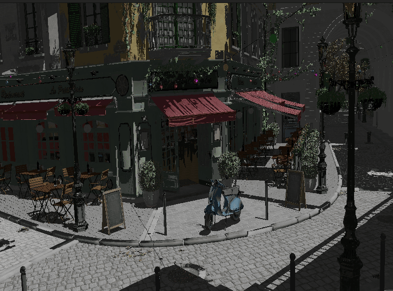

Building a Simple Engine: Introduction
Introduction
Welcome to the "Building a Simple Engine" tutorial series! This series marks a transition from the foundational Vulkan concepts covered in the previous chapters to a more structured approach focused on building a reusable rendering engine.
A New Learning Approach
While the previous tutorial series focused on introducing individual Vulkan concepts step by step, this series takes a different approach:
This series targets readers who have completed the Vulkan Tutorial and feel comfortable with the fundamentals. We’ll emphasize architectural concepts and design patterns over exhaustive API permutations, so you develop an engine mindset rather than a collection of snippets. Expect to do more independent work: fill in smaller gaps, experiment, and lean on the Vulkan Guide, Samples, and Specification as primary references. If a topic feels too advanced, revisit the original tutorial and return when ready.
What to Expect
The "Building a Simple Engine" series is designed as a starting point for your journey into engine development, not a finishing point. We’ll cover:
-
Engine Architecture - How to structure your code for flexibility, maintainability, and extensibility.
-
Resource Management - More sophisticated approaches to handling models, textures, and other assets.
-
Rendering Techniques - Implementation of modern rendering approaches within an engine framework.
-
Performance Considerations - How to design your engine with performance in mind.
-
Publication Considerations - How to prepare your application for distribution in a professional environment, including packaging, deployment, and platform-specific considerations.
Throughout this series, we encourage you to experiment, extend the provided examples, and even challenge some of our design decisions. The best way to learn engine development is by doing, and sometimes by making (and learning from) mistakes.
Throughout our engine implementation, we’re using vk::raii dynamic rendering and C20 modules. The vk::raii namespace provides Resource Acquisition Is Initialization (RAII) wrappers for Vulkan objects, which helps with resource management and makes the code cleaner. Dynamic rendering simplifies the rendering process by eliminating the need for explicit render passes and framebuffers. C20 modules improve code organization, compilation times, and encapsulation compared to traditional header files.
How to Use This Tutorial
Each chapter builds on the last to assemble a small but capable engine. Read a chapter end‑to‑end first, then implement; pause to internalize the concepts; and don’t hesitate to revisit the original Vulkan tutorial when you need a refresher. Treat the code as a starting point—experiment and extend it with your own features.
Let’s begin our journey into engine development with these chapters:
-
Engine Architecture - How to structure your code for flexibility, maintainability, and extensibility.
-
Camera Transformations - Implementation of camera systems and transformations.
-
Lighting & Materials - Basic lighting models and push constants.
-
GUI - Implementation of a graphical user interface using Dear ImGui.
-
Loading Models - More sophisticated approaches to handling models, textures, and other assets.
-
Subsystems - Implementation of Audio and Physics subsystems with Vulkan compute capabilities.
-
Tooling - CI/CD, Debugging, Crash minidump, Distribution, and Vulkan extensions for robustness.
-
Mobile Development - Adapting the engine for Android/iOS, focusing on performance considerations and mobile-specific Vulkan extensions.
-
Advanced Topics - Short, focused tutorials that extend the Simple Engine with specific features and optimizations.
Getting Started with Example Assets
To follow along with the attachments-based Simple Engine examples and scenes, fetch the Bistro assets locally.

-
Linux/macOS (default target: attachments/simple_engine/Assets/bistro at repository root):
$ cd attachments/simple_engine $ ./fetch_bistro_assets.sh
-
Windows (default target: attachments\simple_engine\Assets\bistro at repository root):
> cd attachments\simple_engine > fetch_bistro_assets.bat
The scripts use SSH (git@github.com:gpx1000/bistro.git) and fall back to HTTPS if SSH is unavailable. If Git LFS is installed, large files will be pulled automatically.
Next, take advantage of the install_dependencies_* scripts to ensure you have all necessary dependencies.
Once assets are available and dependencies are ready, build and run the Simple Engine examples under attachments/simple_engine. See the later chapters for details on scene loading and subsystems referenced by the example code.